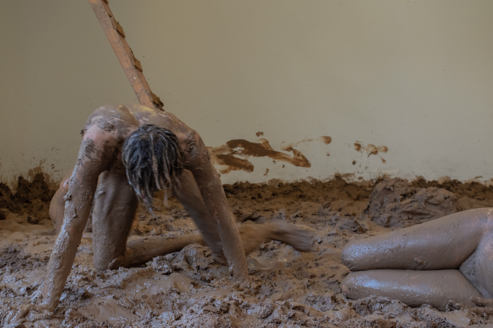
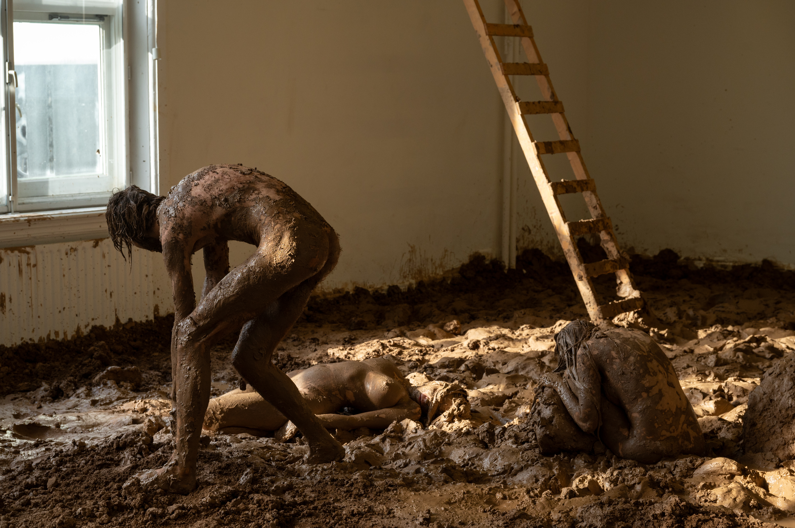

details here
Baksteen Fabriek
Performance piece; space
July 2-7th, 2026
The Hague, The Netherlands
In BAKSTEEN FABRIEK the performers explore the movement of their body in a space surrounded by clay. While working with a framework of movement that answers to the question: What is it like to move without a function? The piece explores the movement of the body when it is stripped away from its mundane or utilitarian function, and when it is in a space that is nothing but the raw material, the clay; seeking to find how does "being moved by" a material look like.
This piece was created by covering the floor of a space with 13 tonnes of clay (provident of Germany), taking out the celining panels
to expose the original building structure.
This proyect was posssble thanks to Delgromij, Oscar van der Kruis and the facilities team at the KABK.
PERFORMERS
Adrianna Wojtylowicz
Bo Oskamp
Catarina ???
Jacobus Benning
Jens Klitte Mogensen
Martina Parma Muñoz
Mayuka Kowaguchi
Zacharias Theodosakis
.JPG)

Mayuka Kowaguchi

The visitors could also enter the performance space.

Photography by Andrea Nino Lombardi; Eric de Vries


.jpg)